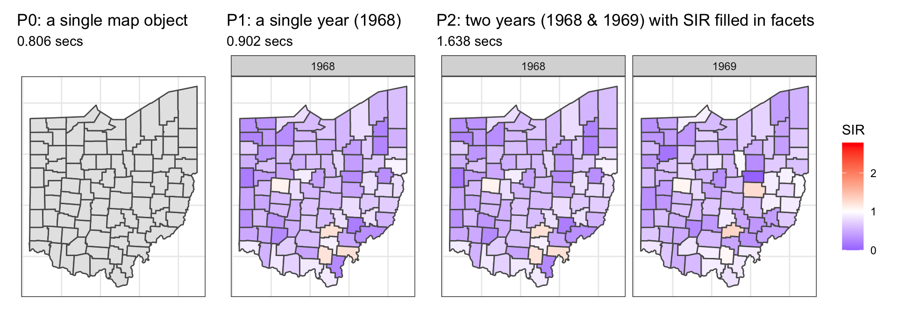
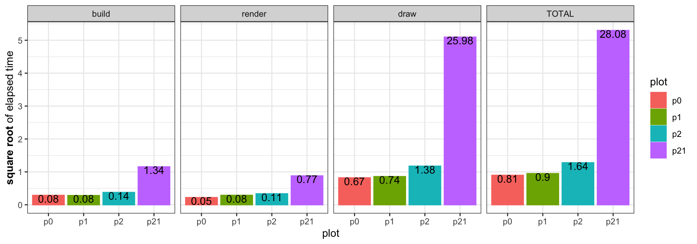
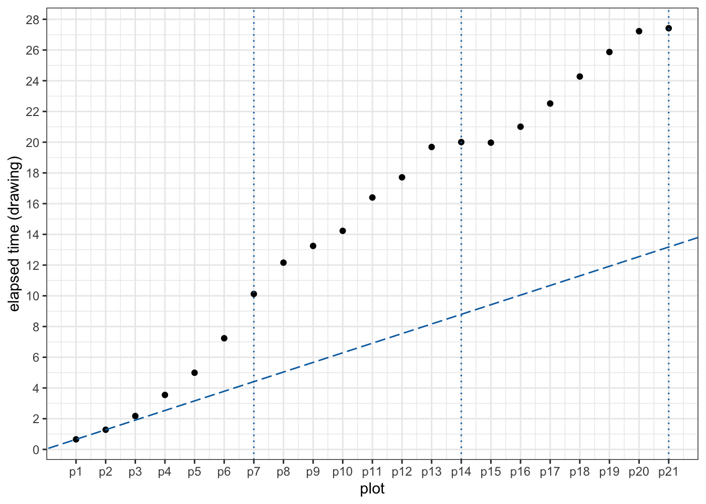
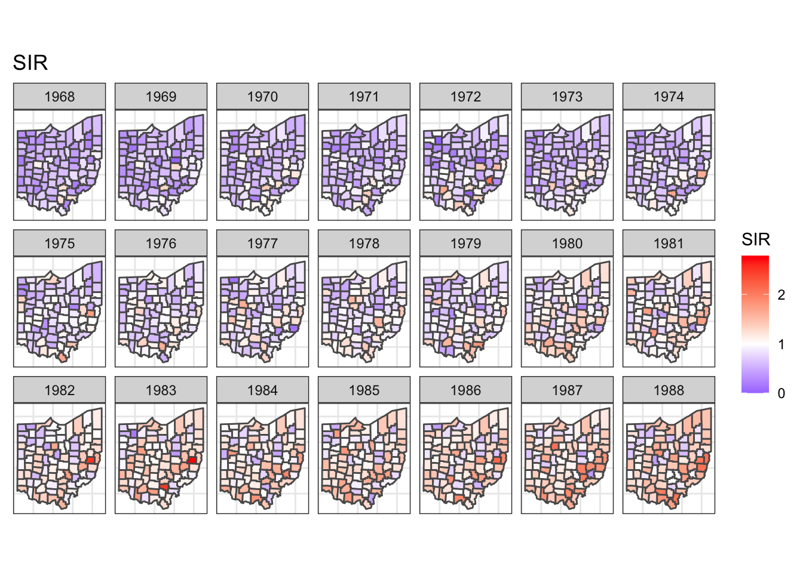

Simple feature collection with 88 features and 1 field
Geometry type: POLYGON
Dimension: XY
Bounding box: xmin: -84.8203 ymin: 38.40342 xmax: -80.5182 ymax: 42.32713
Geodetic CRS: NAD83
# A tibble: 88 × 2
NAME geometry
<chr> <POLYGON [°]>
1 Auglaize ((-84.13476 40.65755, -84.13467 40.65755, -84.13405 40.65753, -84…
2 Crawford ((-82.77258 40.99589, -82.77258 40.99588, -82.77168 40.99588, -82…
3 Montgomery ((-84.06231 39.8366, -84.06301 39.83665, -84.06501 39.83677, -84.…
4 Guernsey ((-81.22986 40.06315, -81.22987 40.06308, -81.22992 40.06119, -81…
5 Clark ((-83.83875 39.8233, -83.83889 39.82335, -83.83904 39.82339, -83.…
6 Gallia ((-82.18737 38.72608, -82.18727 38.72558, -82.18707 38.72488, -82…
7 Fairfield ((-82.82307 39.80773, -82.82307 39.8078, -82.82305 39.80801, -82.…
8 Darke ((-84.43157 40.15801, -84.43148 40.15487, -84.43148 40.1542, -84.…
9 Monroe ((-81.22569 39.57838, -81.24065 39.57883, -81.2413 39.57885, -81.…
10 Portage ((-81.3184 40.98861, -81.31892 40.98862, -81.31927 40.98862, -81.…
# … with 78 more rowsHow long do maps on ggplot facets take?
data visualization
spatial data
When creating time-faceted maps in ggplot2, you might notice that things start to slow down as more time periods are added…
If you’re a ggplot user, faceted plots must be under your belt. If you happen to do some spatial analysis, you can’t be more familiar with maps. Today, I will show you my findings on the rendering time of faceted map.
This example comes from Chapter 7 of Paula Moraga’s book Geospatial Health Data: Modeling and Visualization with R-INLA and Shiny and I have simplified it for my demonstration. In essence, there are two datasets:
- Map data (
ohio) with 88 Ohio counties in ansfobject:
- Lung cancer data (
sir) with standardized incidence ratios (SIRs) calculated for each county across 21 years (1968 - 1988):
# A tibble: 1,848 × 3
county year SIR
<chr> <dbl> <dbl>
1 Adams 1968 0.725
2 Adams 1969 0.588
3 Adams 1970 1.03
4 Adams 1971 0.654
5 Adams 1972 1.05
6 Adams 1973 0.693
7 Adams 1974 1.15
8 Adams 1975 1.17
9 Adams 1976 0.936
10 Adams 1977 0.644
# … with 1,838 more rowsThe details on calculating SIR is not the focus of this post and Section 7.1 to 7.2 of Paula’s book has detailed all the steps you need if interested. Here I attach the script to generate these two data in case you would like to give it a spin:
script
#remotes::install_github("Paula-Moraga/SpatialEpiApp")
library(SpatialEpiApp)
library(SpatialEpi)
library(tidyverse)
library(sf)
# ohio map data
ohio <- read_sf(system.file("SpatialEpiApp/data/Ohio/fe_2007_39_county/fe_2007_39_county.shp",
package = "SpatialEpiApp")) %>%
select(NAME, geometry)
# sir case data
raw <- read_csv(system.file("SpatialEpiApp/data/Ohio/dataohiocomplete.csv",
package = "SpatialEpiApp"))
dt <- raw %>% arrange(county, year, gender, race)
res <- dt %>%
group_by(NAME, year) %>%
summarise(Y = sum(y)) %>%
ungroup()
n_strata <- 4
E <- expected(population = dt$n, cases = dt$y, n.strata = n_strata)
nyears <- length(unique(raw$year))
countiesE <- rep(unique(raw$NAME), each = nyears)
ncounties <- length(unique(raw$NAME))
yearsE <- rep(unique(raw$year), time = ncounties)
sir <- tibble(county = countiesE, year = yearsE, E = E) %>%
left_join(res, by = c("county" = "NAME", "year")) %>%
mutate(SIR = Y/E) %>%
select(county, year, SIR)What we would like to do here is to show those SIR values of each county on the map across year. This would require us to join the two datasets, supply the combined data into ggplot, plot the underlying map, fill the county polygon with SIR, make facets with year, and lastly add a few tweaks on theme and the scale of fill. Let’s give this plot a name, say target:
combined <- ohio %>%
left_join(sir, by = c("NAME" = "county"))Warning in sf_column %in% names(g): Each row in `x` is expected to match at most 1 row in `y`.
ℹ Row 1 of `x` matches multiple rows.
ℹ If multiple matches are expected, set `multiple = "all"` to silence this
warning.target <- combined %>%
ggplot() +
geom_sf(aes(fill = SIR)) +
facet_wrap(~year, dir = "h", ncol = 7) +
ggtitle("SIR") +
theme_bw() +
theme(
axis.text.x = element_blank(),
axis.text.y = element_blank(),
axis.ticks = element_blank()
) +
scale_fill_gradient2(
midpoint = 1, low = "blue", mid = "white", high = "red"
)
targetEasy peasy.
But, have you thought about how long it would take to bring this plot to you?
Warning in sf_column %in% names(g): Each row in `x` is expected to match at most 1 row in `y`.
ℹ Row 1 of `x` matches multiple rows.
ℹ If multiple matches are expected, set `multiple = "all"` to silence this
warning.Let me show you some components of this plot as benchmarks, here I have:
P0: a single map object (left): 0.806 secsP1: a single year (1968) with SIR filled (mid): 0.902 secs, andP2: two years (1968 & 1969) with SIR filled in facets (right): 1.638 secs

okay, now it is your time to make a guess:
~1 or 2 seconds? Ideally if the same map is rendered in parallel across all the facets, the increment of time would be marginal.
~16 seconds? The increment of rendering another facet from 2) to 3) is 0.736 (1.638-0.902) seconds. Projecting that into 20 more facets will give us: 0.902 + (1.638-0.902) * 20 = 16.358 seconds.
30 seconds, 40 seconds, 1 minute? I don’t know.
Let’s reveal the answer
There are different ways to check the execution time of a command and here we use ggplot2::benchplot(), which breaks down the creation time by constructing, building, rendering, and drawing:
function (x)
{
x <- enquo(x)
construct <- system.time(x <- eval_tidy(x))
if (!inherits(x, "ggplot")) {
abort("`x` must be a ggplot object")
}
build <- system.time(data <- ggplot_build(x))
render <- system.time(grob <- ggplot_gtable(data))
draw <- system.time(grid.draw(grob))
times <- rbind(construct, build, render, draw)[, 1:3]
times <- rbind(times, colSums(times))
cbind(step = c("construct", "build", "render", "draw", "TOTAL"),
mat_2_df(times))
}
<bytecode: 0x7fd993f25ff8>
<environment: namespace:ggplot2>Ready for the answer? Here you go:
benchplot(target) step user.self sys.self elapsed
1 construct 0.000 0.000 0.000
2 build 1.289 0.050 1.336
3 render 0.707 0.055 0.774
4 draw 25.914 0.067 25.975
5 TOTAL 27.910 0.172 28.085WOW, I do not expect it to take 28.085 seconds to get our plot!
How come it takes that long?
We can take a look at the time decomposition of our target plot along with the three benchmark plots. This would tell us at which stage our target plot takes long:

Here p0 to p2 are the three benchmark plots and p21 is the target plot (since it has 21 facets). Notice the y-axis is the square root of elapsed time and the text on each bar is the actual elapsed time.
Building and rendering times look fine, but our target plot is taking a considerable large amount of time in the drawing. Looking back into benchplot(), the drawing time is calculated as the time of grid.draw() drawing the grob:
draw <- system.time(grid.draw(grob))We could also do an experiment to progressively add facets to see how the drawing time changes as there are more facets. Here I start with p1 containing only year 1968 and p2 containing year 1968 & 1969, and add one more year at a time till p21, which contains all the 21 years from 1968 to 1988. Here is the script I used to make the simulation:
combined <- ohio %>% left_join(sir, by = c("NAME" = "county"))
make_plot <- function(data){
data %>%
ggplot() +
geom_sf(aes(fill = SIR)) +
theme_bw() +
facet_wrap(~year, dir = "h", ncol = 7) +
theme(
axis.text.x = element_blank(),
axis.text.y = element_blank(),
axis.ticks = element_blank(),
) +
scale_fill_gradient2(
limits = c(0, range(combined$SIR)[2]),
midpoint = 1, low = "blue", mid = "white", high = "red",
)
}
bench_plot <- function(data){
p <- make_plot(data)
benchplot(p)
}
time_all <- map_dfr(year, function(y){
dt <- combined %>% filter(year <= y)
dev.new()
out <- dt %>% bench_plot()
while (dev.cur()>1) dev.off()
return(out)
}, .id = "plot")Note that the workhorse, out <- dt %>% bench_plot(), is wrapped in between dev.new() and while (dev.cur()>1) dev.off() so that a clean canvas is set up before each evaluation and closed after. Now we can plot the result and take a look:

The three dotted vertical lines are where a new row takes place in the facet. The dashed line connects p1 and p2 and shows how the elapsed time would be if a linear interpolation between p1 and p2 is followed. Unfortunately, This is not the case from our plot.
Looking at these points, something wired is going on here: by the end of the first row, the increment from having six facets (p6) to seven facets (p7) is much larger than those in early plots (p1 to p5). However, the end of the second row tells us something else: the increment from having 13 facets (p13) to 14 facets (p14) is almost negligible. This is also the case at the end of the third row (p20 and p21)1.
Warning in sf_column %in% names(g): Each row in `x` is expected to match at most 1 row in `y`.
ℹ Row 1 of `x` matches multiple rows.
ℹ If multiple matches are expected, set `multiple = "all"` to silence this
warning.Back to the initial problem
While I can’t find the answer of why the drawing time with additional facets has such a pattern, what initially annoys me was it takes much longer than I expected to create the target plot. If we only want to cut the run time, there is always the trick of simplifying your map object. Applying rmapshaper:: ms_simplify() on ohio will keep 1% of the points in the polygons by default and it can instantly bring the rendering time of our target plot down to 2.283 seconds:
ohio2 <- ohio %>% rmapshaper::ms_simplify()
combined2 <- ohio2 %>% left_join(sir, by = c("NAME" = "county"))
target2 <- combined2 %>% make_plot()
benchplot(target2) step user.self sys.self elapsed
1 construct 0.000 0.000 0.000
2 build 1.463 0.023 1.486
3 render 0.517 0.006 0.523
4 draw 0.272 0.003 0.274
5 TOTAL 2.252 0.032 2.283And how does the plot look like after the simplification?

At least I can’t tell it from the original plot.
Hopefully, you’re as surprised as I do when first knowing how long it takes to render our facet map. We find that it is the drawing time that takes the majority of the time to create the plot and the time required to draw more facet is not a linear increase of the initial two facets. However, technically, we didn’t answer the question of why it takes that long to render the target plot or what grid.draw() is doing when plotting the facets. But even if we can’t answer it, a fast rendering is still available if we remember map simplification.
Footnotes
To make a proper benchmark of time, ideally each plot (
p1-p21) should be evaluated repetitively to obtain a distribution of the elapsed time. I set up a script with 50 repetitions and let it run overnight, but what I got next morning was “RStudio quit unexpectedly”. I suspect there is something going on with opening and closing the graphic devices too many times…↩︎